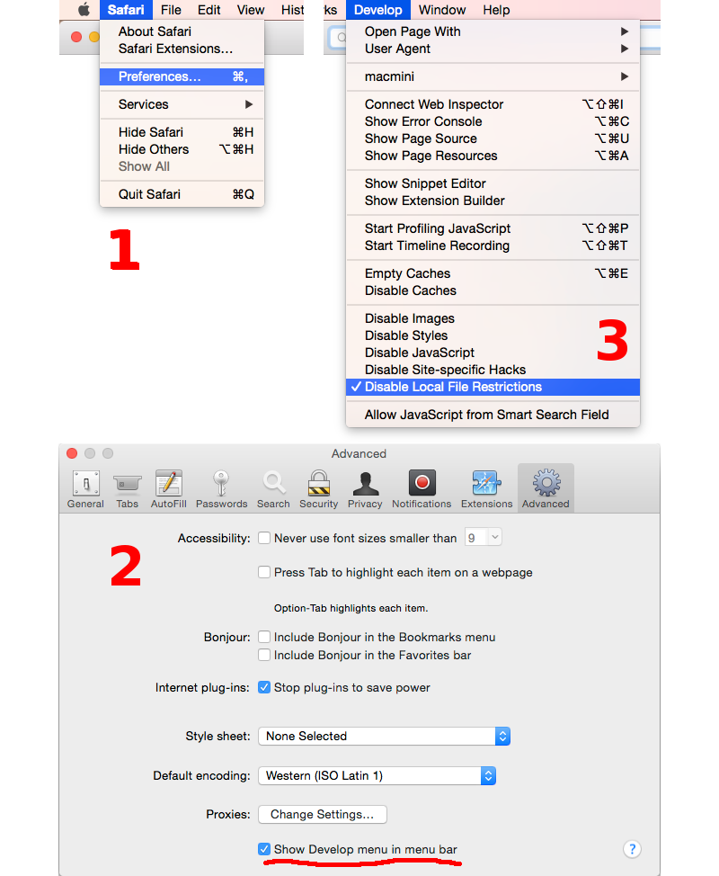

Развёртывание среды разработки¶
Следующий вариант установки подойдет для разработчиков 3D приложений. Если же нужно простое ознакомление с аддоном Blend4Web, то, возможно, будет удобнее экспресс-установка.
Для работы необходим дистрибутив движка, браузер (настроенный для локального просмотра) и Blender (с установленным аддоном).
Установка дистрибутива¶
Стабильные версии дистрибутива поставляются в виде архива (blend4web_sdk_free.zip – бесплатный SDK, blend4web_sdk_pro.zip – коммерческий SDK). Для установки достаточно распаковать данный архив в любое место на диске.
В дистрибутиве находятся исходный код движка, компактная версия для приложений, скрипты к Blender’у, исходные blend-файлы группы разработки, экспортированные сцены, текстуры и звуковые файлы (см. подробную структуру репозитория).
Выбор браузера¶
Для работы движка требуется браузер с поддержкой WebGL. Для проверки можно перейти на страницу http://get.webgl.org/. Должна появиться надпись зеленого цвета и вращающийся куб:

Настройка браузера для загрузки локальных ресурсов¶
Рендерер движка является Web-приложением, и его работа происходит при просмотре HTML-файла в браузере. После инициализации происходит загрузка ресурсов (сцен, текстур), которая подчиняется правилу ограничения домена, запрещающему, в частности, загрузку из локальной директории. Простым способом обхода этого ограничения может быть настройка браузера (рекомендуется). Другой способ заключается в использовании локального web-сервера.
Примечание
Рекомендуется использовать такой браузер только для просмотра локального контента, поскольку изменение настроек может привести к понижению безопасности.
Chrome на Windows:
Правой кнопкой мыши нажать на ярлыке на рабочем столе, выбрать Свойства (Properties), после чего в поле для пути к исполняемому файлу добавить после пробела --allow-file-access-from-files. Нажать ОК.

Для удобства можно предварительно создать копию ярлыка и изменить ее для локального просмотра, оставив оригинальную версию ярлыка для запуска браузера в обычном режиме.
Chrome на OS X:
Открыть Терминал и запустить браузер с параметром:
> /Applications/Google\ Chrome.app/Contents/MacOS/Google\ Chrome --allow-file-access-from-files
Chrome/Chromium на Linux:
Запустить браузер с параметром:
> google-chrome --allow-file-access-from-files
или:
> chromium-browser --allow-file-access-from-files
Firefox на Windows/Linux/OS X:
Ввести about:config в адресную строку браузера, найти параметр security.fileuri.strict_origin_policy и переключить его двойным щелчком мыши из true в false.

Safari/OS X:
Включить в настройках отображение меню “Develop”, затем активировать опцию “Disable Local File Restrictions”.
{kind=link}
Использование локального web-сервера¶
Простым вариантом обеспечения просмотра локальных ресурсов в браузерах может быть запуск web-сервера из стандартной библиотеки Python.
На Windows:
Загрузить и инсталлировать последнюю версию Python с официального сайта. В процессе установки выберите опцию добавления пути к исполняемому файлу (Add python.exe to Path).
Запустить командную строку (Command Prompt).
Выполнить команду в корневой директории SDK:
> python -m http.server
На Linux/OS X:
В случае отсутствия в дистрибутиве, загрузить и инсталлировать последнюю версию Python с официального сайта.
Запустить командную строку (Terminal).
Выполнить команду в корневой директории SDK:
> python3 -m http.server
После загрузки сервера, в любом браузере открыть корневую страницу с приложениями из состава SDK, расположенную по адресу http://localhost:8000.
В случае необходимости, можно указать порт дополнительным параметром:
> python3 -m http.server 8080
Запуск демо приложений и просмотрщика сцен¶
Откройте файл index.html в настроенном браузере. Должна отобразиться страница со ссылками на приложения из состава SDK, включая просмотрщик сцен.
Примечание
Если приложения SDK не отображаются корректно, или появляются сообщения об ошибках, необходимо предпринять действия, описанные в разделе Проблемы при запуске рендерера.
Установка аддона движка¶
Примечание
Если аддон ранее был установлен с помощью экспресс-установки, то рекомендуется прежде его удалить.
Запустить Blender, загрузить сцену по умолчанию File > New (горячие клавиши Ctrl-N). Вызвать окно пользовательских настроек File > User Preferences... (горячие клавиши Ctrl-Alt-U). Во вкладке File в поле Scripts выбрать путь к директории blender_scripts.

Нажать Save User Settings и перезапустить Blender.
Примечание
Вместо этого можно скопировать директорию со скриптами blender_scripts/addons/blend4web в уже используемую пользовательскую директорию для скриптов или даже в установочную директорию, например:
C:\Program Files\Blender Foundation\Blender\2.70\scripts\addons\blend4web.
Повторно загрузить сцену по умолчанию, вызвать окно пользовательских настроек, перейти на вкладку Addons и выбрать категорию Import-Export. Отметить галочку напротив Import-Export: Blend4Web.

Нажать Save User Settings. Перезапуск Blender не требуется.
Для проверки:
В меню File > Export должны появиться опции Blend4Web (.json) и Blend4Web (.html). Кроме того должны появиться операторы при выполнении поиска по “B4W” (горячая клавиша ПРОБЕЛ).
Включение опции экспорта в HTML¶
Опция Blend4Web (.html) в меню File > Export по умолчанию не активна, в отличие от версии одиночного аддона (см. экспресс-установка).
В случае необходимости (например, если требуется отладка HTML экспорта) данную опцию можно включить. Для этого указать путь к Blend4Web SDK, в поле Path to Blend4Web SDK.